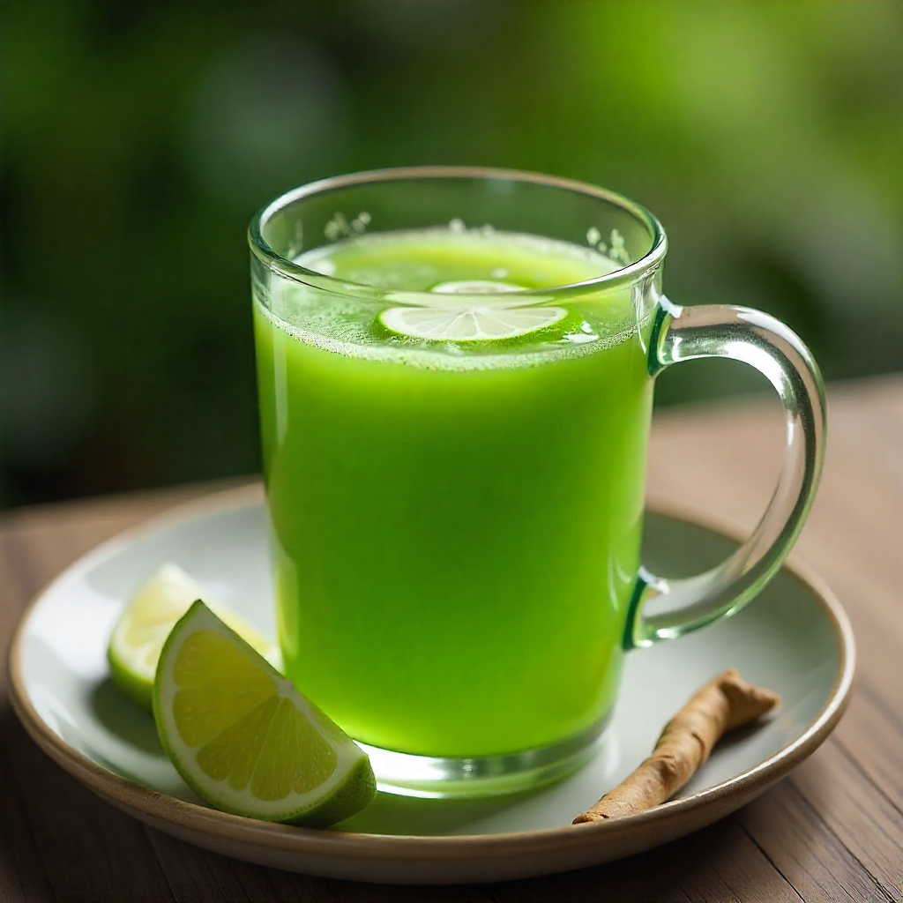
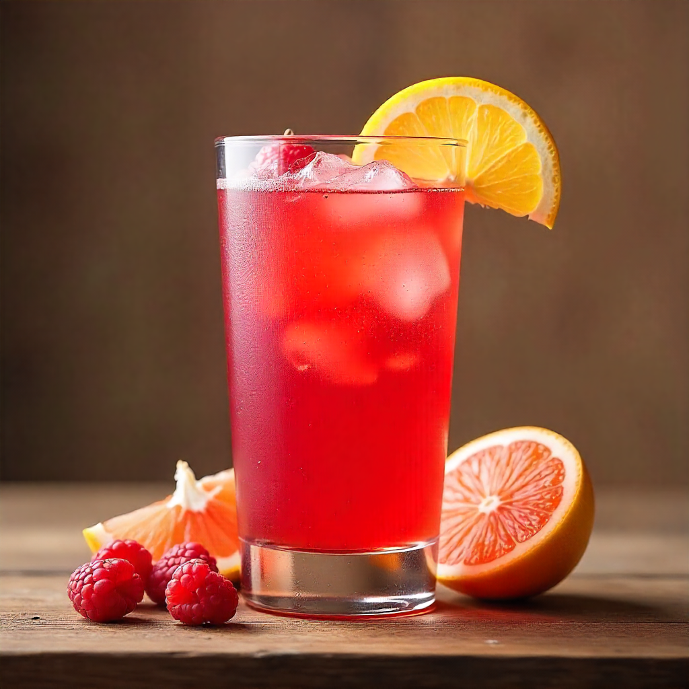
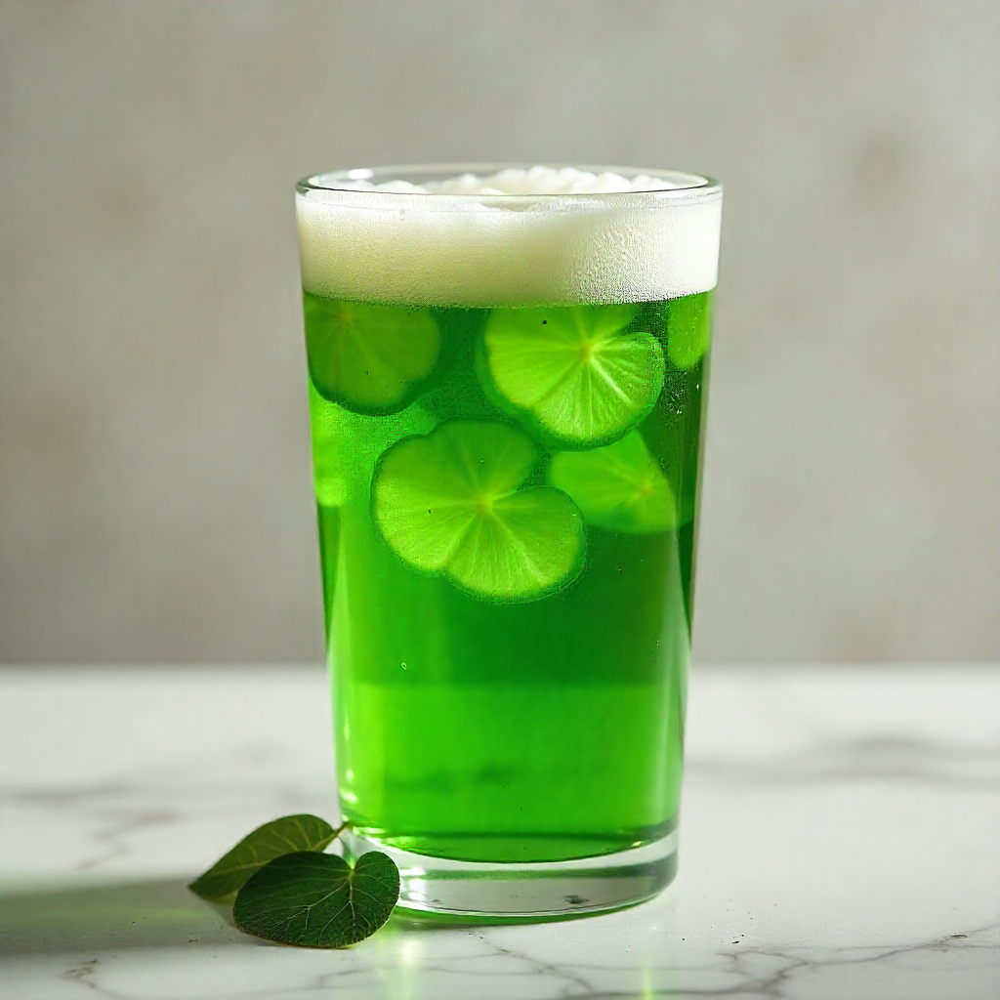
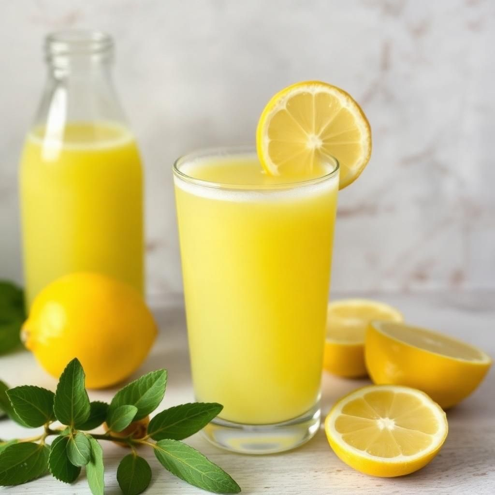
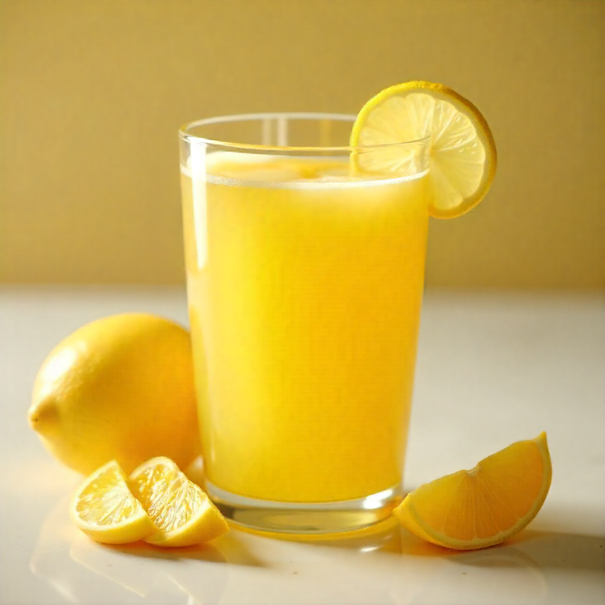

Os sucos detox oferecem múltiplos benefícios ao organismo: promovem hidratação e reposição de líquidos, fornecem vitaminas, minerais e fibras que fortalecem o sistema imunológico, ajudam na melhora da digestão e do funcionamento intestinal, estimulam o metabolismo, contribuem para a sensação de disposição e energia, possuem ação antioxidante que combate os radicais livres e auxilia na proteção das células, e ainda podem complementar uma alimentação equilibrada favorecendo o bem-estar geral.
Receitas de sucos detox
1. Suco Verde

Ingredientes
2 fatias de abacaxi sem casca;
1 maçã grande;
1 folha de couve grande;
1 g de gengibre;
Suco de 2 limão
Suco de 2 limão;
Modo de preparo
No liquidificador, bata todos os ingredientes e acrescente 1 litro de água, menos o suco do limão, até que fique homogêneo.
No copo sem coar e acrescente o suco de limão. Beba na hora.
2. Suco Rosa

Ingredientes
4 cenouras;
1 beterraba;
3 laranjas;
raspas de gengibre (opcional)
Modo de preparo
Bata os ingredientes no liquidificador com aproximadamente 1,5 litros de água. Mexa bem e adoce a gosto.
3. Suco de abacaxi com couve e laranja

Ingredientes
2 colheres de sopa de couve manteiga picada;
2 fatias médias de abacaxi;
3 laranjas;
1 maçã sem casca e sem semente
Modo de preparo
Bata no liquidificador todos os ingredientes até obter uma bebida homogênea. Se preferir, adicione 1 litro de água, coe e sirva.
4. Suco de melão com limão e couve

Ingredientes
¼ prato de sobremesa de couve manteiga (crua);
1 fatia grossa de melão;
1 copo médio de água de coco;
1 colher de sopa de hortelã;
¼ colher de sopa de suco de limão;
3 cubos de gelo
Modo de preparo
Junte todos os ingredientes e bata tudo no liquidificador, se preferir, adicione 1 litro de água, sirva a seguir.
5. Suco de couve com laranja lima

Ingredientes
1 suco de laranja lima;
1 punhado de salsinha;
1 punhado folhas de hortelã;
2 folhas de couve com o talo;
200ml água de coco;
1 colher sopa aveia em flocos finos
Modo de preparo
Bata os ingredientes no liquidificador com meio litro de água. Depois, acrescente mais, aproximadamente, 1,5 litros de água. Mexa bem e adoce a gosto.